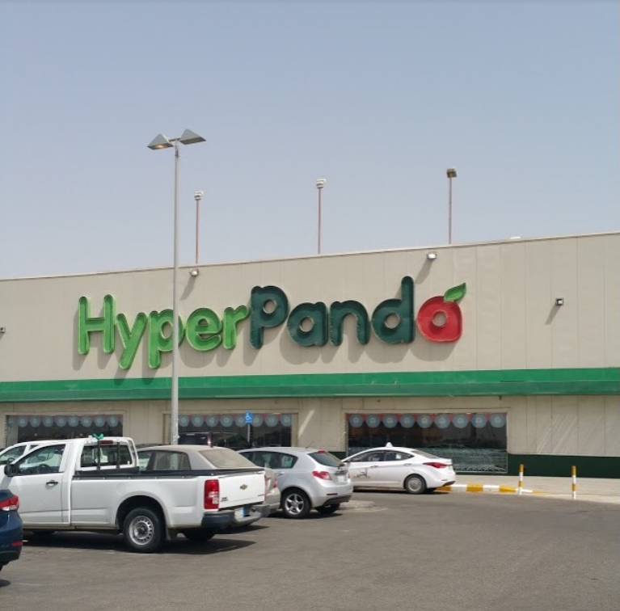

In 2021 I used to work as a cashier in a supermarket chain called
"Panda", and to be more precise,
it was this specific branch called
"HyperPanda". It was
a hectic job at times and some customers were just unbearable, but with
the guidance of my co-workers I managed to learn how to tolerate and
treat customers of all shapes and types. Through that job I learnt the
importance of patience and tolerance.
